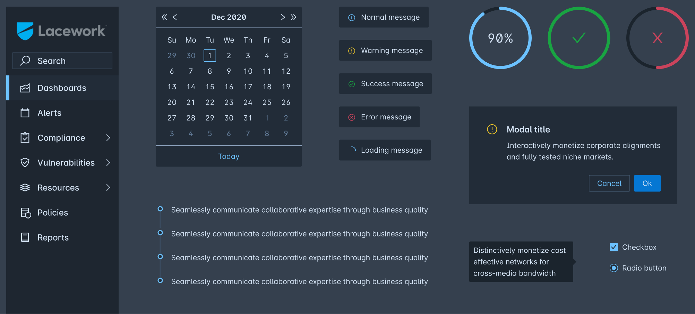

Duration
May - Aug 2021 (3 months)
Role
User Research, UI/UX Design, Design Systems
Tools Used
Figma, Dovetail
In summer 2021, I had the opportunity to work with the wonderful team at Lacework, a cloud security company based in the Bay Area. It was an amazing time working with passionate and experienced designers, hearing about their experiences designing for security, and sharing my own experiences as a new designer. As I worked through the complexities of cloud security, remote work, and designing in a formal environment, I grew not only as a designer, but as a collaborator, a learner, and a communicator.
Many of Lacework's customers use PDF and CSV reports to share their security status with others in the company. For the 12 weeks of my internship, I worked with my design supervisor and our project PM to restructure Lacework's reports system, creating a centralized workflow where thousands of security executives across hundreds of Lacework's customers can preview, customize, and edit reports to suit their needs.
While I cannot share what I worked on publicly, feel free to take a look at the general rundown of my design process! If you are a job recruiter, I've included a password to the full case study on my resume. Feel free to reach out to me for a password or a chat about this project at joyceshen0@gmail.com!
Despite dark mode being a popular choice among our customers, Lacework's dark mode currently works by inverting light mode colors, leaving strange drop shadows, poor separation of elements, and accessibility issues. As a side project, I researched and overhauled colors and styles for Lacework's dark mode component library.
During my internship, our UX team had the opportunity to hold a three-day workshop with BRIDGEGOOD, a nonprofit providing design education and opportunities to design students of color. We conducted two remote lectures, where I discussed user research and user personas and assisted in a user interview exercise, and also held an in-person workshop where I guided students on creating affinity diagrams.
I had a really rewarding time at Lacework, and I couldn't have asked for a better environment to foster my growth as a designer. Working in an open and collaborative space helped me develop a new mindset to approaching design, one that allows room for uncertainty, input, and improvement.
Cloud security is confusing. Even the senior designers on my team who had years of experience with cloud security admitted that they were learning new things about the field every day. When I first started the internship, I was uncomfortable with the amount of uncertainty I was facing. But as I spent more time in meetings and speaking to Lacework employees, I began to embrace the delight in learning something new, handling failure, and asking dumb questions. I found enjoyment in being lost and having a whole world to explore in front of me.
Though our design team and product team contributed substantially to our reports project, some of the best ideas came from our engineering team, which brought a new perspective to the logistics behind each screen, and our customer success team, which had a better understanding of customer needs for our project. Everyone brought their own knowledge and ideas to our design, and that's what made it work.
The compliments I was showered with after my final presentation boosted my confidence in myself as a designer. Lacework was my first leap in my path to becoming a professional designer, and an experience I will cherish for a long time. Thank you to Jayati, Matt, Lindsey, Yizhou, Rutuja, and Shruti for making this experience the best it could ever be! 💙